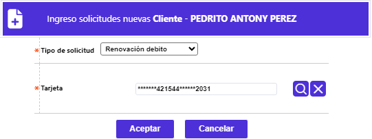
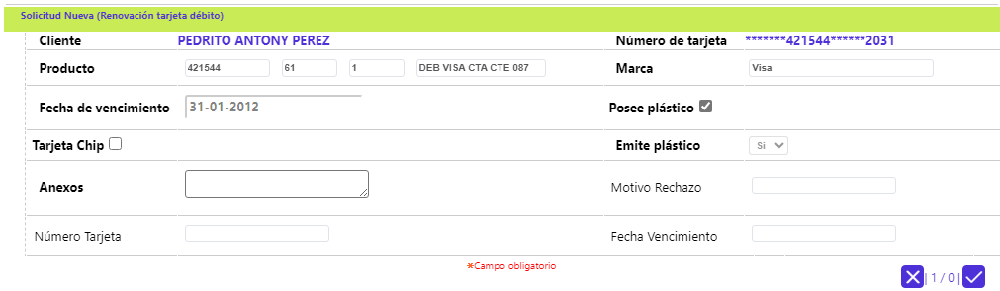

Renovación débito
A partir de los pasos previos descritos en la opción Ingreso otras solicitudes ,se registra la solicitud de renovación individual de la tarjeta débito, para lo cual la entidad efectúa la generación del nuevo plástico, de una tarjeta que aún no ha llegado a su fecha de expiración, pero que por alguna razón, el cliente requiere que sea cambiada su fecha de vencimiento antes del proceso normal de renovación que realiza la entidad. Así mismo el Sistema calcula los costos que se cargarán al cliente, de acuerdo con los parámetros que la entidad defina en la opción Definición productos, para lo cual se selecciona el número de la tarjeta débito a renovar, y luego se activa el botón Aceptar:

el sistema despliega el siguiente formulario:

Descripción de Campos
|
Cliente |
Campo no modificable muestra el nombre del cliente titular de la tarjeta débito, haciendo clic sobre el mismo, se accede a los datos de dicho cliente si se requiere. |
|
NUmero de Tarjeta |
Campo no modificable que ilustra el número de la tarjeta débito (enmascarado - si aplica) desde el cual, haciendo clic sobre el mismo permite conocer los datos de la misma. |
|
Producto |
Campos de salida desplegados por el sistema una vez ingresado el número de tarjeta asociado a la solicitud, permitiendo conocer el Bin, Segmento, Grupo de afinidad y Descripción, que conforman el producto del plástico actual. |
|
Marca |
Campo de salida que ilustra la franquicia asociada al producto, previa vinculación con el Bin a través del formulario Definición de bines. |
|
Fecha vencimiento |
Campo de salida que en formato DD-MM-YYYY muestra la fecha en que expira el plástico actual de la tarjeta débito. |
|
Posee plástico |
Campo que ilustra lo parametrizado a nivel de Definición productos asociado a la tarjeta por medio de la que se realiza la solicitud. Si el campo aparece como activo o señalado permite interactuar con el siguiente campo Emite plástico, ya que es posible que no se desee generar un nuevo plástico. |
|
Emite plástico |
Campo que posee lista de valores adjunta de la que debe seleccionarse entre Si se emite plástico o No, dependiendo del tipo de solicitud. Elpoder interactuar con este campo depende del valor que tenga el campo Posee plástico. |
|
Tarjeta chip |
Campo que indica si el producto a renovar maneja chip |
|
Anexos |
Campo que permite ingresar información relacionada con la solicitud, referente a documentos suministrados por el cliente u otros datos. |
|
Motivo rechazo |
Campo de salida que contiene datos, solamente, cuando la solicitud es negada, ypermite conocer la razón correspondiente. |
|
Número tarjeta |
Campo de salida que despliega el nuevo número de tarjeta asignado por el sistema, para cuando se emite plástico. |
|
Fecha vencimiento |
Campo de salida que ilustra la fecha en que expira el nuevo plástico generado por el sistema, para cuando el tipo de solicitud lo requiere. |